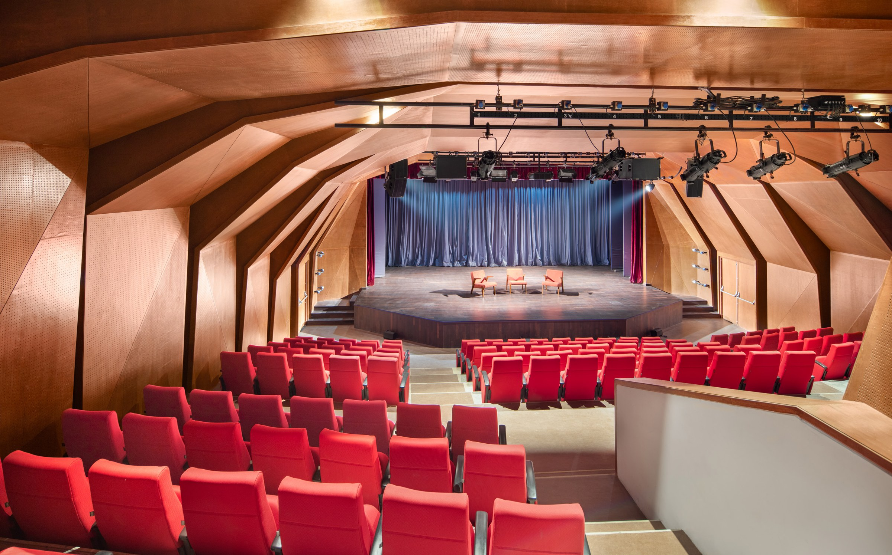
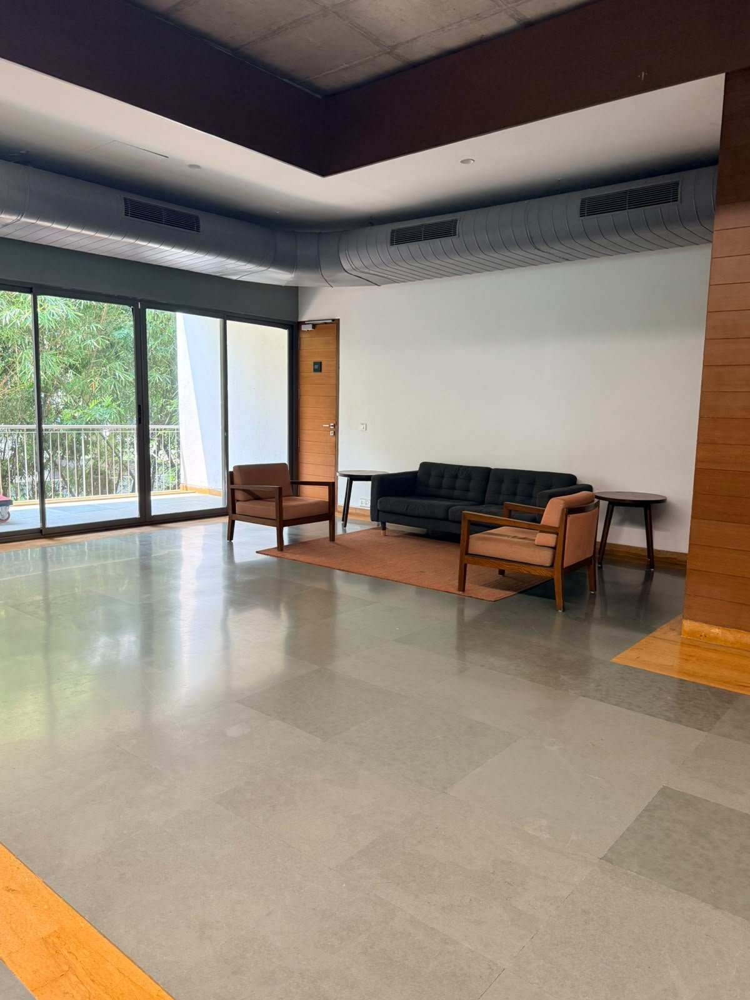
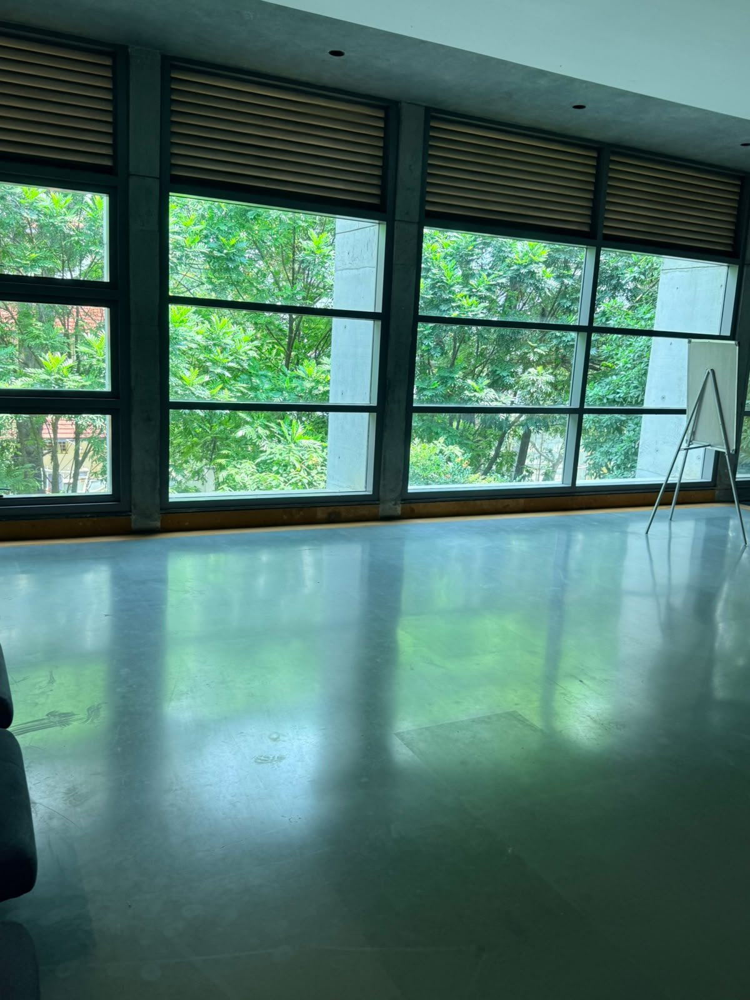

LIFEatBRIDGE
EVENTS
Brand activation proposal · CHOSEN by Dermatology
Fun, hands-on activities for 150 CHOSEN customers and creators, inside the auditorium and in the first-floor foyer.
Saturday 31 October 2026 · Bangalore International Centre, Domlur · 11:00–14:30 · Production and execution by LIFEATBRIDGE EVENTS
The brief, as we read it
150
Guests: regular CHOSEN users, creators, press and partners
3.5h
11:00 to 14:30. A seated talk and panel, then free movement between zones
80%
Target: 80% of guests leave with their own exposome map
Zero
Nothing that feels like a normal launch event, and nothing that feels like a report card
Know Your Exposome · Activation proposal · 02
LIFEatBRIDGE
EVENTS
Our activation rules
01
UV, pollution, blue light, sleep, stress, diet or water. One at a time, never a lecture.
02
150 guests and two hours. Long queues kill the mood, so every activity is quick.
03
A print, a bracelet, a stamp, a receipt. People photograph and keep objects.
04
All wording, scoring and hosts follow one rule from the brief: not your fault, your information.
05
Good light for phones, vertical framing, and a visible change the camera can catch.
Every claim on anything printed or shown goes to Dr. Renita for approval before production, as the brief requires.
Know Your Exposome · Activation proposal · 03
LIFEatBRIDGE
EVENTS
The venue · Bangalore International Centre, first floor only



A stage with a front apron, a 6.5 m projection screen, six motorised light bars with a lighting console, four wireless mics and two green rooms behind the stage. Guests enter from the back. Seated activities happen here: the envelope, the lights-down reveal, bingo, the live vote and the stand-up.
Lounge end: registration, CHOSEN’s three zones, food service and the goodie bag counter. Glass end: our lab tables, the floor game and the content studio, in natural light.
Ground floor and rooftop are not available. Final layout drawn on BIC’s first-floor plan at the site visit.
Know Your Exposome · Activation proposal · 04
LIFEatBRIDGE
EVENTS
The guest journey
Guests arrive in the foyer and collect a passport. They sit for the talk and panel. Then they move freely between CHOSEN’s zones at the lounge end and our lab tables at the glass end, and collect their goodie bag at the exit. The passport shows them where to go next, so very little signage is needed.
1
Welcome drink, 11:00
2
Issued at registration
3
Talk, vote, panel, stand-up
4
Map, Proof Bench, Younger Room
5
UV print, beads, receipt, floor game
6
Passport checked at the exit
Everything is on the first floor. Guests use their phones only for the live vote and in the Content Lab; everything else is hands-on. Stops 4 and 5 share the foyer: CHOSEN’s zones near the exit, our tables near the glass wall, so the crowd spreads out.
Know Your Exposome · Activation proposal · 05
LIFEatBRIDGE
EVENTS
Inside the auditorium · Activation 01 · no phones
The idea. Every seat has a sealed envelope that says “Do not open until the lights go down.” Inside: a white bead bracelet, a bingo card, a pencil and an anonymous confession card. Thirty seconds into Dr. Renita’s welcome, the room goes dark and UV lights come on. A hidden line printed in invisible ink appears on every envelope: “You can’t see what is ageing your skin. Until now.”
Why it works. Guests see the idea of the exposome instead of being told about it, in the first minute. Fifteen envelopes have a red seal: a skip-the-queue pass for the Younger Room, which the brief expects to be the busiest spot.
Mock-up · inside, then the reveal
Bracelet
Bingo card
Confession
“The worst thing I do to my skin is…”
YOU CAN’T SEE WHAT IS AGEING YOUR SKIN. UNTIL NOW.
Lights off, UV on, 150 envelopes glow
Know Your Exposome · Activation proposal · 06
LIFEatBRIDGE
EVENTS
Inside the auditorium · Activation 02 · during the panel · no phones
The idea. The bingo card in the envelope has twenty exposome words, such as UV index, PM2.5, blue light, sleep debt and melanin. When a panellist says a word, guests tick it. The first person to complete a line stands up and shouts “Exposed!”
Why it works. People usually switch off during a 30-minute science panel. Bingo makes 150 people listen for the exact words CHOSEN wants them to remember, and say them out loud.
Mock-up · a completed top line
UV index
PM2.5
Blue light
Melanin
Sleep debt
Cortisol
Barrier
Collagen
SPF
Glycation
Humidity
Hard water
Pollution
Sun hours
Hydration
Exposome
EXPOSED!
Sixteen of the twenty words shown. Dr. Renita decides the final list.
Know Your Exposome · Activation proposal · 07
LIFEatBRIDGE
EVENTS
Inside the auditorium · Activation 03 · panel opener · the one phone moment
The idea. Five statements about skin appear on the big screen with a QR code. Guests scan it and tap Fact or Fiction. The results fill up live on screen. Then the panel gives the real answer. The difference between what the room thinks and what the science says is the perfect start for the panel.
Why it works. The audience takes part before the panel starts, and the moderator gets five easy ways into the discussion. It takes five minutes, then phones go away.
Mock-up · vote 2 of 5
150 phones
“Sunscreen is only needed when I am outdoors.”
Fact
71%
Fiction
29%
The panel gives the answer. Dr. Renita writes both the statements and the answers.
Percentages are examples only. We build and test the vote page and results screen.
Know Your Exposome · Activation proposal · 08
LIFEatBRIDGE
EVENTS
Inside the auditorium · Activation 04 · the brand stand-up · no phones
The idea. A twelve-minute comedy set about the exposome: Bengaluru traffic, scrolling at 2 a.m., the “I’m only outside for five minutes” sunscreen excuse. Half the jokes come from the audience’s own confession cards, collected during the Q&A and given to the comedian ten minutes before.
The brand hook. Dr. Renita sits beside the stage with a buzzer. After each joke, she gets one line to confirm or correct the science. The comedian sets it up; the dermatologist has the final word.
Mock-up · one beat of the set
Comedian · from the cards
“Card no. 61: I apply sunscreen only on days I can see the sun. In Bengaluru. In monsoon.”
Fact-check · Dr. Renita
One line gives the real answer. Her words, not ours.
Buzzer
Twelve minutes, six jokes, six fact-checks. The brand speaks only through the corrections.
Know Your Exposome · Activation proposal · 09
LIFEatBRIDGE
EVENTS
Foyer, from arrival · Activation 05 · no phones
The idea. At registration, every guest gets a small printed passport instead of a name badge. It has eight stamp boxes, one per station, and staff stamp it as guests go. A full passport earns the bigger goodie bag at the exit.
Why it works. It turns free movement into a treasure hunt, repeats the exposome words on every page, and gives CHOSEN its key number: at the exit we count how many passports have the Exposome Map stamp.
Mock-up · fully stamped
Exposome passport
No. 042
1
Map
2
Proof
3
Younger
4
Wall
5
6
Beads
7
Receipt
8
Game
Full passport = bigger goodie bag at the exit
Know Your Exposome · Activation proposal · 10
LIFEatBRIDGE
EVENTS
Foyer, lounge end · Activation 06 · no phones
The idea. After the stand-up, the handwritten confession cards are pinned on a four-metre wall, sorted into the same six groups as the Exposome Map: sun, city, screens, sleep, stress, diet. Guests find their own card among 150 others and see that their habit is just one factor, not a judgement.
Why it works. It shows the brief’s message in a physical way: not your fault, your information. A wall of handwriting is the most photographed thing at any event we have built. It stands next to Zone 1, so guests reach the map already thinking in the same six groups.
Mock-up · six groups
Sun
no SPF in the car
reapply? never
City
ORR, windows open
bike, no cover
Screens
2 a.m. reels
phone in bed
Sleep
5 hours, if lucky
pillow face
Stress
deadline face
four coffees
Diet
sugar at 11 pm
water? barely
Example cards written by us to show the tone.
Know Your Exposome · Activation proposal · 11
LIFEatBRIDGE
EVENTS
Foyer, glass end · Activation 07 · no phones
The idea. Special light-sensitive paper (cyanotype) turns deep blue under UV light. Guests write their name or place a leaf on a sheet, paint over it with CHOSEN sunscreen, and put it in a UV light box for three minutes. After a rinse in water, everything the sunscreen covered stays pale. They take the print home.
Why it works. A simple proof that sunscreen blocks UV, turned into a souvenir. The drying line becomes the most photographed corner of the foyer, and the print tells the brand story without any words.
Mock-up · after 3 minutes
UV light box
Priya
Where the sunscreen went, the paper stays pale.
Know Your Exposome · Activation proposal · 12
LIFEatBRIDGE
EVENTS
Foyer, glass end · Activation 08 · no phones
The idea. The white bracelet from the envelope changes colour in UV light. Guests make a second bracelet and hold it under a UV lamp in three ways: behind a piece of car window glass, behind shade net, and in the open. Then they rub sunscreen on half the beads and try again.
Why it works. The beads change colour even behind car glass. That ends the “I’m in the car, I don’t need sunscreen” excuse in three seconds. Guests leave with two bracelets and a story.
Mock-up · same beads, three tests
Car glass
Still changes. Glass lets UV through.
Shade mesh
Fainter, not gone.
Open
Full violet in seconds.
Half with sunscreen, half without
Left: protected, stays pale. Right: unprotected, turns violet.
Know Your Exposome · Activation proposal · 13
LIFEatBRIDGE
EVENTS
Foyer, glass end · Activation 09 · one button, no phones
The idea. A screen by the glass wall shows today’s live numbers for Domlur: UV index, air pollution (PM2.5), humidity and hours of daylight, from public weather data. Guests press a big button and a receipt printer gives them a “bill” for what their skin faced today. The last line says “Paid in full. CHOSEN.”
Why it works. The exposome stops being an idea and becomes real numbers for this city, right now. A receipt is cheap, fits in a pocket, and people love to share it.
Mock-up · screen and receipt
Domlur · live
UV index
[__]
PM2.5
[__]
Humidity
[__]%
Daylight
[__] h
SKIN BILL
31 OCT · BLR
UV
[__]
PM2.5
[__]
Daylight
[__]
PAID IN FULL.
CHOSEN.
Values are live on the day; nothing is pre-printed.
Know Your Exposome · Activation proposal · 14
LIFEatBRIDGE
EVENTS
Foyer, glass end · Activation 10 · no phones
The idea. A 4 m × 4 m snakes-and-ladders board printed on the foyer floor. Every square is a moment in a Bengaluru day: “Window down on the ORR: go back three.” “Reapplied sunscreen at 2 p.m.: go up five.” Teams of four, a giant foam dice, a host with a mic, six minutes per game.
Why it works. The snakes are the things that damage skin. The ladders are CHOSEN’s four-step routine. Nobody is judged on their own habits, so it is loud and fun without being personal.
Mock-up · ladders up, snakes down
31
32
33
34
35
36
30
29
28 ↓
27
26
25
19
20
21
22
23
24
18
17
16
15
14 ↓
13
7
8
9 ↓
10
11
12
1
2
3
4 ↑
5
6
Red ↑ “Reapplied SPF at 2 p.m.”: 4 to 22. Violet ↓ “Window down on the ORR”: back three.
Know Your Exposome · Activation proposal · 15
LIFEatBRIDGE
EVENTS
Foyer, glass end · Activation 11 · phones welcome here
The idea. A small, well-lit studio with three sets, where any guest, not only the 30 creators, can make a social post in two minutes: a teleprompter set for “the exposome in 15 seconds”, a lab table for product photos, and a mirror set with flattering light.
Why it works. The brief wants social content that explains the science, not just pictures of the venue. The teleprompter gives guests the right words, in their own voice. The window light and the trees outside make a good backdrop.
Mock-up · teleprompter set
REC 0:09
Okay, new word. Exposome. Everything around me that is ageing my skin: the sun, the traffic, my phone at 2 a.m. I can’t change the air. I can change the outcome. I have CHOSEN what to do about it.
#KnowYourExposome
Script built from lines in CHOSEN’s brief; final wording approved by Dr. Renita.
Know Your Exposome · Activation proposal · 16
LIFEatBRIDGE
EVENTS
Foyer, blackout booth · Activation 12 · optional, quoted separately as the brief asks
The idea. Under a UV camera, sunscreen looks black. Guests take a “before” photo, apply CHOSEN sunscreen the way they normally do, and take an “after” photo. The spots they missed, usually ears, hairline and eyelids, are the lesson. They get a printed before-and-after card to keep.
Why it works. The brief already says skin imaging will be the most popular item. We agree. We give it its own dark booth in the middle of the foyer, so it does not add to the Proof Bench queue.
Mock-up · before and after under UV
BEFORE
AFTER · dark = protected
Dashed yellow marks the spots most people miss: hairline, eyelids, ears.
Know Your Exposome · Activation proposal · 17
LIFEatBRIDGE
EVENTS
Back of house · the web layer
No software licences, no app to install. Each page is one simple screen built and hosted by LIFEATBRIDGE, tested on BIC’s Wi-Fi and a 4G router before the day, and run from one laptop. Only the vote uses guests’ phones. The rest are display screens and staff tools.
Guest-facing · 5 minutes
QR code on the big screen, two buttons on the phone, live results on screen. Paper paddle in the envelope as backup.
Screen only
Domlur UV index, pollution, humidity and daylight from public data; the same page prints the receipt when the button is pressed.
Staff only
Staff tap once per stamp on a tablet at each station. The number of guests who completed the Exposome Map (the brief’s 80% target) shows live at the exit.
Screen only
The welcome slide, the vote results and the stand-up title card on the big screen, all from the same laptop, so there is no switching between sources during the show.
We can show CHOSEN a working vote page and dashboard on a call before the costed proposal, and test them live at BIC during the site visit.
Know Your Exposome · Activation proposal · 18
LIFEatBRIDGE
EVENTS
How it fits together
From the brief: welcome address, moderated panel, Q&A on two roving mics.
From the brief: registration, Zone 1 Exposome Map, Zone 2 Proof Bench, Zone 3 Younger Room, food and drinks served by staff, goodie bag at the exit.
Zone 1 is passport stamp one. The exit check tells CHOSEN exactly how many guests left with a map.
Red-seal envelopes and bingo winners get Younger Room skip-the-queue passes, which spreads out the queue the brief warns about.
The map’s six groups organise the Confession Wall. The Proof Bench’s four steps become the floor game’s ladders.
Know Your Exposome · Activation proposal · 19
LIFEatBRIDGE
EVENTS
Run of show · Saturday 31 October 2026
| Time | Programme (per brief) | Where | Our activities |
|---|---|---|---|
| 11:00–11:30 | Walk-in, registration, welcome drink | Foyer | Passport issued; envelopes already on every seat |
| 11:30–11:40 | Welcome address, Dr. Renita Rajan | Auditorium | Envelopes opened; UV reveal thirty seconds in |
| 11:40–11:45 | New: Fact or Fiction live vote | Auditorium | Five statements, our vote page on the big screen; paper paddles as backup |
| 11:45–12:15 | Panel: the latest in exposome science | Auditorium | Exposome Bingo running; three winners |
| 12:15–12:25 | Q&A from the floor, two roving mics | Auditorium | Confession cards collected by runners |
| 12:25–12:40 | New: EXPOSED stand-up with fact-check | Auditorium | Comedian on stage, Dr. Renita on the buzzer |
| 12:40–14:30 | Zones open, passed food and drink | Foyer | All stations open; Confession Wall up from 12:45; same-day photos from 13:30 |
| 14:30 | Soft close | Foyer exit | Passport check, goodie bag handed over |
Changes to the brief’s timing: the panel runs 30 minutes instead of 35, the Q&A 10 instead of 15, and the zones open at 12:40 instead of 12:30. If CHOSEN prefers the original timings, the stand-up can open the day at 11:30 as a warm-up before the welcome.
Know Your Exposome · Activation proposal · 20
LIFEatBRIDGE
EVENTS
| Activation | Key build or print | Tech | Staff | Lead time |
|---|---|---|---|---|
| 01 Envelope + reveal | 160 UV-ink envelopes, bracelets, cards | 8–12 rented UV lights on BIC’s rig | 4 pre-doors | 10 days |
| 02 Bingo | 160 cards, six layouts, pencils | Roving mic | 2 runners | 7 days print |
| 03 Live vote | Paddles in envelope as fallback | Our vote page, 4G router | 1 operator | 5 days, then test |
| 04 Stand-up | Stool, buzzer, lighting state | BIC mic, two cameras | 2 runners | Book talent now |
| 05 Passport | 160 passports, 10 stamps | Optional counter tablet | 3 | 7 days print |
| 06 Confession Wall | 4m × 2.5m printed wall, pins | Front lighting | 2 curators | 10 days build |
| 07 Print Lab | 200 cyanotype sheets, bench, tubs, line | Two UV light boxes | 2 | Order sheets now |
| 08 Bead Lab | 3,000 beads, three frames, bench | One UV lamp | 1 | 7 days |
| 09 Live receipt | Branded roll, arcade button | Our web display, screen, printer | 1 | 7 days |
| 10 Floor game | 4m × 4m floor vinyl, foam dice | Small speaker, mic | 2 | 7 days print |
| 11 Content Lab | Three small sets, backdrops | Studio and ring lights, teleprompter | 3 | 10 days build |
| 12 Sunscreen Selfie (opt.) | 3m × 3m blackout booth | Rented UV camera | 1 operator | Rental to confirm |
Staff counts are on top of the registration, floor, food and creator teams in the brief. Each item is a separate line in the costed proposal, so activities can be added or removed one by one.
Know Your Exposome · Activation proposal · 21
LIFEatBRIDGE
EVENTS
To lock this in · 18 days to show
By Fri 16 Oct
By Tue 20 Oct
By Fri 23 Oct
From LIFEATBRIDGE
Know Your Exposome · Activation proposal · 22
LIFEatBRIDGE
EVENTS
LIFEatBRIDGE
EVENTS
Know Your Exposome · CHOSEN by Dermatology · 31 October 2026 · Bangalore International Centre
LIFEATBRIDGE EVENTS · lifeatbridge@gmail.com